시계열 그래프
ts 객체 생성
- 예제: 백화점 매출액 자료
depart.txt는 어떤 백화점의 1984년 1월부터 1988년 12월까지의 월별 매출액이 입력되어 있다. 함수 scan()을 사용하여 자료를 R로 불러오자. 함수 scan()은 한 변수로 이루어진 텍스트 파일을 R로 불러올 때 사용할 수 있는 함수이다.
depart <- scan("https://raw.githubusercontent.com/yjyjpark/TS-with-R/main/Data/depart.txt")이제 벡터 depart를 함수 ts()를 사용하여 ts 객체로 변환시켜보자.
depart.ts <- ts(depart, start = c(1984, 1), frequency = 12)
depart.ts
## Jan Feb Mar Apr May Jun Jul Aug Sep Oct Nov Dec
## 1984 423 458 607 564 536 536 804 540 488 627 672 1447
## 1985 514 518 699 654 612 612 884 605 547 705 698 1555
## 1986 561 564 773 717 665 667 994 661 616 786 806 1754
## 1987 622 636 874 831 769 779 1142 764 718 930 943 2039
## 1988 736 752 1057 947 868 931 1311 896 867 1073 1069 2333시계열 그래프 작성
- 예제: 백화점 매출액 자료
백화점 매출액 자료인 depart.ts의 시계열 그래프를 Figure 1 에 작성해 보자.
library(fpp2)
autoplot(depart.ts) +
labs(title = "Monthly sales of a department store",
x = "Year", y = NULL)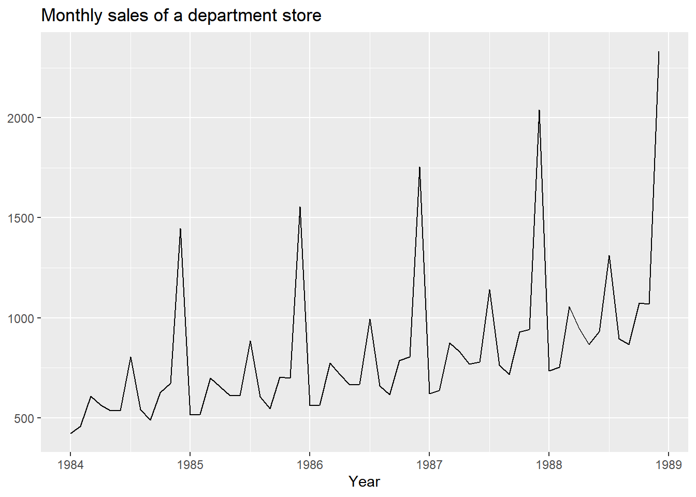
- 예제: 지구 온도 자료
1856년 1월부터 2005년 12월까지 지구 온도 자료가 global.txt에 입력되어 있다. 이 자료의 시계열 그래프를 Figure 2 에 작성해 보자.
global <- scan("https://raw.githubusercontent.com/yjyjpark/TS-with-R/main/Data/global.txt")
global.ts <- ts(global, start = c(1856, 1), frequency = 12)autoplot(global.ts) +
labs(title = "Global Temperature 1985 ~ 2005",
x = "Year", y = NULL)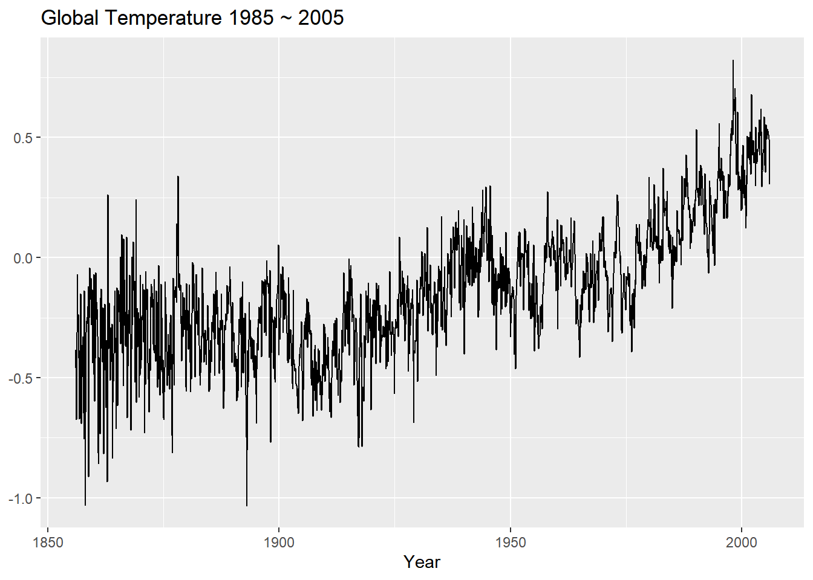
Figure 2 에서 볼 수 있는 것은 대략 1970년 이후로 지속적인 상승 패턴이 있다는 점이다. 1970년 이후 자료에 대한 시계열 그래프를 다시 작성해 보자. 이것을 위해서는 이미 생성된 ts 객체에서 일부분을 선택해야 하는데, 이 작업은 함수 window()로 할 수 있다.
global.1970 <- window(global.ts, start = 1970)이제 1970년 1월 이후 자료에 대한 시계열 그래프를 Figure 3 에 작성해 보자.
autoplot(global.1970) +
labs(title = "Global Temperature 1970 ~ 2005",
x = "Year", y = NULL)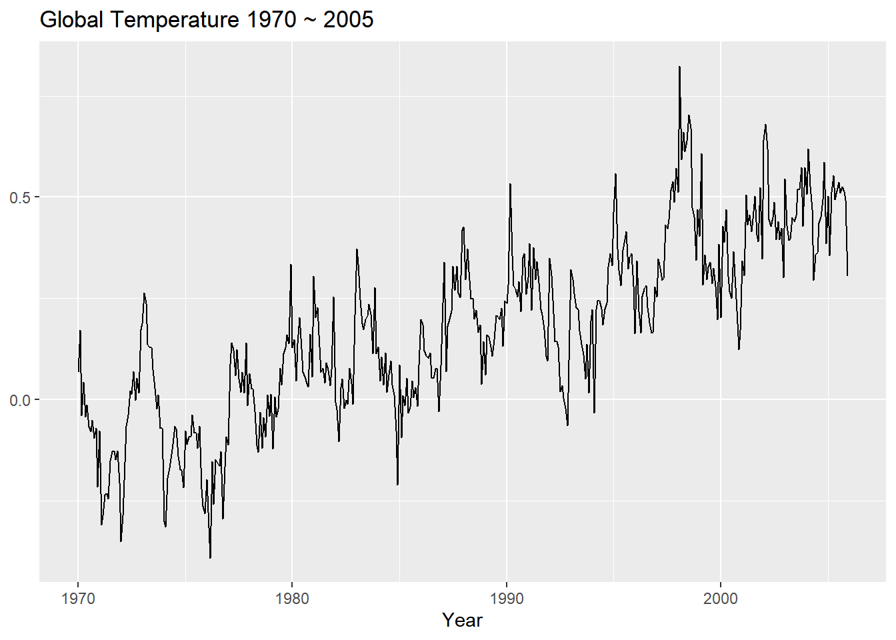
Figure 3 의 시계열 그래프에 회귀직선을 추가하면, 상승 추세를 조금 더 명확하게 확인할 수 있다. 회귀직선을 추가한 그래프를 Figure 4 에 작성해 보자.
autoplot(global.1970) +
geom_smooth(method = "lm", se = FALSE) +
labs(title = "Global Temperature 1970 ~ 2005",
x = "Year", y = NULL)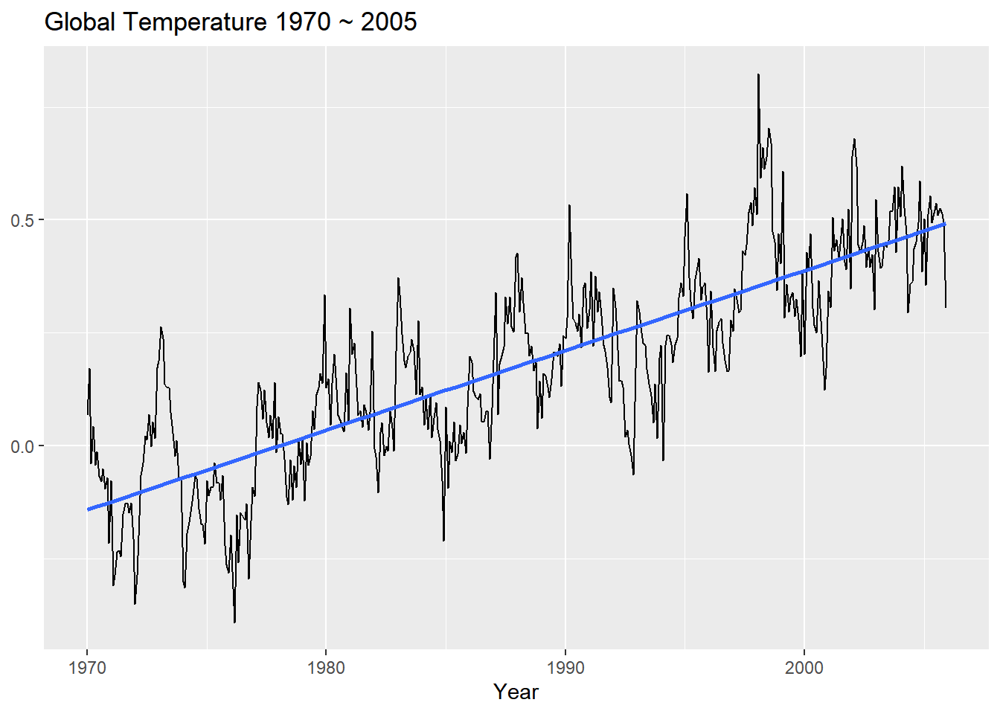
- 예제: 다중 시계열 그래프
cbe.txt에는 호주에서 1958년부터 생산된 초콜릿, 맥주 및 전기의 월별 생산량이 입력되어 있다. 파일은 행과 열의 구조를 갖고 있으며, 각 자료는 빈 칸으로 구분되어 있다. 이런 구조의 텍스트 파일을 불러오기 위해서 패키지 readr의 함수 read_table()을 사용하였다.
library(readr)
CBE <- read_table("https://raw.githubusercontent.com/yjyjpark/TS-with-R/main/Data/cbe.txt")
CBE %>% print(n = 3)
## # A tibble: 396 × 3
## choc beer elec
## <dbl> <dbl> <dbl>
## 1 1451 96.3 1497
## 2 2037 84.4 1463
## 3 2477 91.2 1648
## # … with 393 more rowstibble로 입력된 자료를 ts 객체로 변환해 보자. 함수 ts()에 데이터 프레임을 입력하면 열을 구성하는 벡터를 각각 개별 ts 객체로 변환시킨다.
cbe <- ts(CBE, start = 1958, frequency = 12)
head(CBE, n = 3)
## # A tibble: 3 × 3
## choc beer elec
## <dbl> <dbl> <dbl>
## 1 1451 96.3 1497
## 2 2037 84.4 1463
## 3 2477 91.2 1648cbe에는 시계열자료 choc, beer와 elec로 구성되어 있음을 알 수 있다. 이러한 다중 시계열 자료를 함수 autoplot()에 입력한 다중 시계열 그래프를 Figure 5 에 작성해 보자.
autoplot(cbe) + ylab(NULL)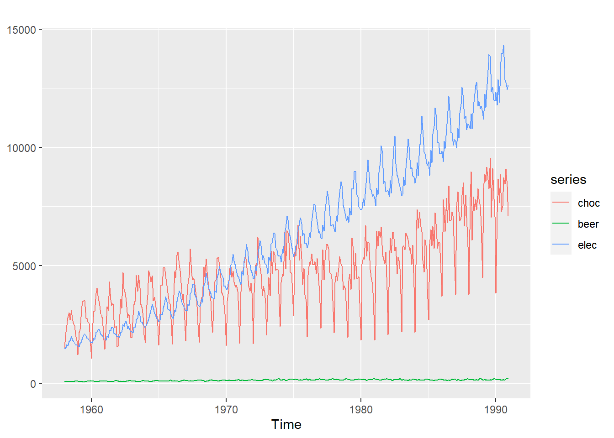
만일 다중 시계열자료의 scale에 큰 차이가 있다면 하나의 그래프에 작성하는 것보다는 facet 그래프를 작성하는 것이 더 효과적이다. Facet 다중 시계열 그래프를 Figure 6 에 작성해 보자.
autoplot(cbe, facets = TRUE) + ylab(NULL)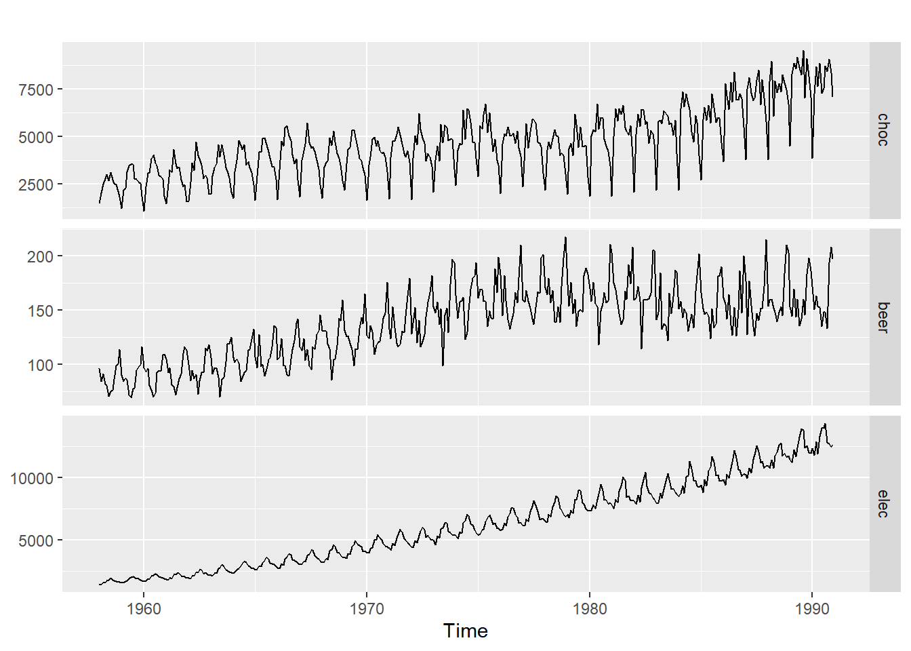
Seasonal 그래프 작성
- 예제:
AirPassengers
우선 함수 ggseasonplot()에 의한 seasonal 그래프를 Figure 7 에 작성해 보자.
ggseasonplot(AirPassengers)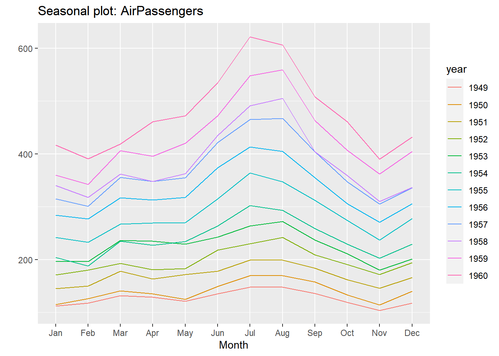
ggseasonalplot()으로 작성된 seasonal 그래프연도 범례를 포함시킨 seasonal 그래프를 Figure 8 에 작성해 보자.
ggseasonplot(AirPassengers, year.labels = TRUE)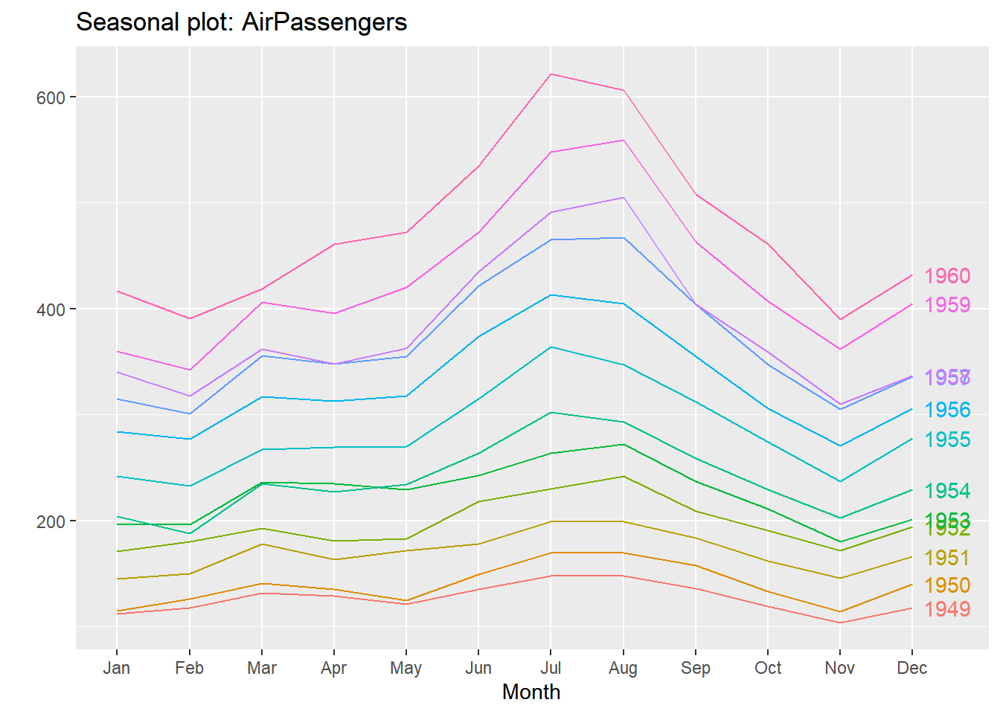
ggseasonalplot()으로 작성된 seasonal 그래프그래프 양쪽에 연도 범례를 포함시킨 seasonal 그래프를 Figure 9 에 작성해 보자.
ggseasonplot(AirPassengers,
year.labels = TRUE, year.labels.left = TRUE)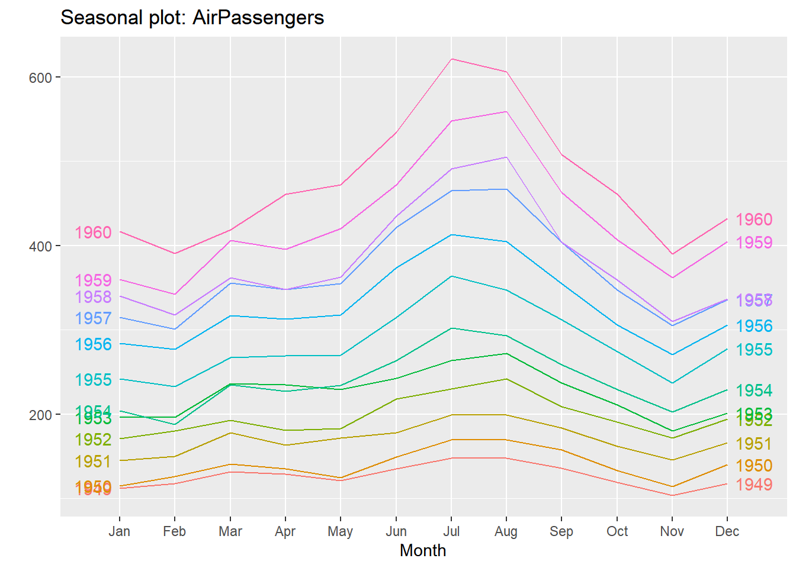
ggseasonalplot()에서 year.labels.left = TRUE를 포함시킨 seasonal 그래프극좌표 형태의 seasonal 그래프를 Figure 10 에 작성해 보자.
ggseasonplot(AirPassengers, polar = TRUE)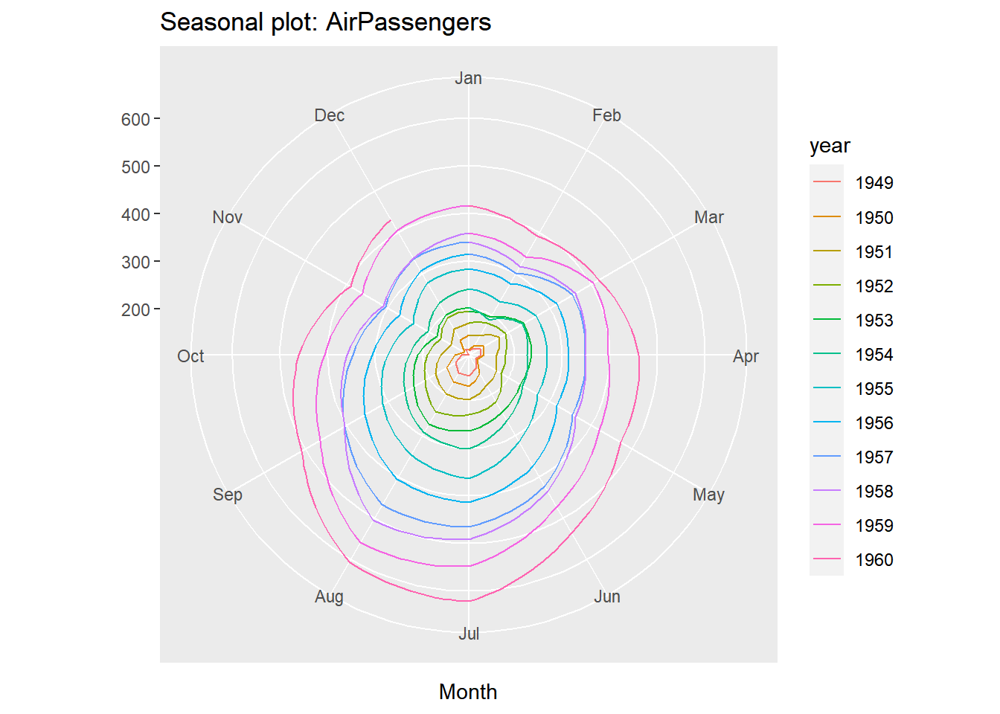
ggseasonalplot()에서 polar = TRUE를 포함시킨 seasonal 그래프이번에는 함수 ggsubseriesplot()으로 그래프를 Figure 11 에 작성해 보자. 월별로 자료를 구분해서 선 그래프를 작성하고, 파란 선으로 월별 평균을 표시한 그래프이다.
ggsubseriesplot(AirPassengers)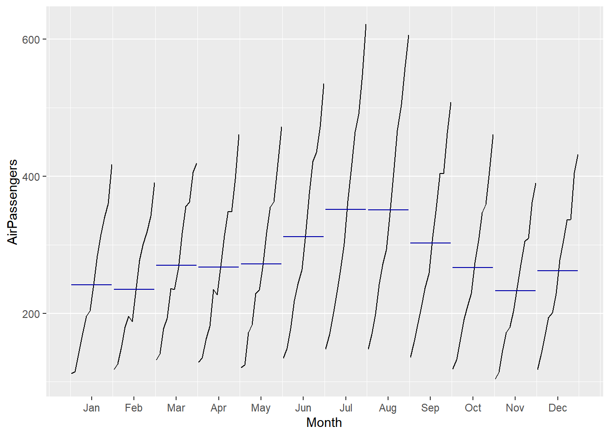
ggsubseriesplot()으로 작성된 seasonal 그래프월별로 구분된 자료를 대상으로 상자그림을 작성해서 보는 것도 의미있는 분석이 될 수 있을 것이다. 상자그림을 작성하기 위해서는 ts 객체인 AirPassengers를 숫자형 벡터로 변환시키고, 각 자료의 주기를 함수 cycle()로 추출해서 요인으로 변환시키는 것이 필요하다. 상자그림으로 계절 요소의 변동을 Figure 12 에 작성해 보자.
tibble(AP = as.numeric(AirPassengers),
mon = as.factor(cycle(AirPassengers))) %>%
ggplot(aes(x = mon, y = AP)) +
geom_boxplot() +
labs(x = "Month", y = "Air Passengers")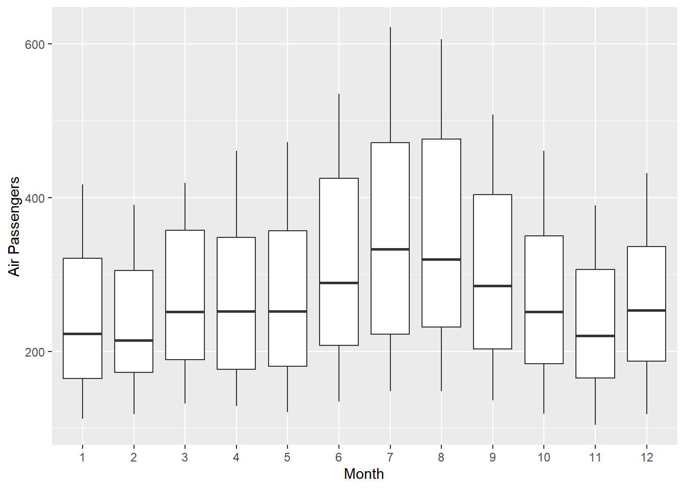
연습문제
- 백화점 매출액 자료인
depart.ts에 대한 다음의 seasonal 그래프를 각각 작성하고, 계절 변동의 패턴에 대해 설명해 보자.
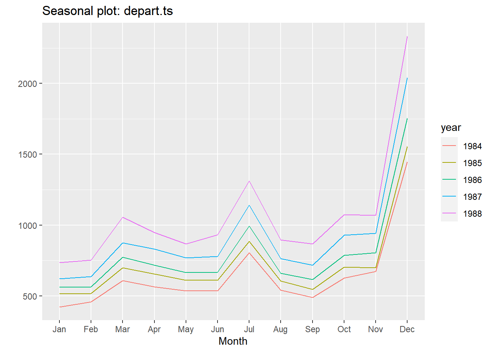
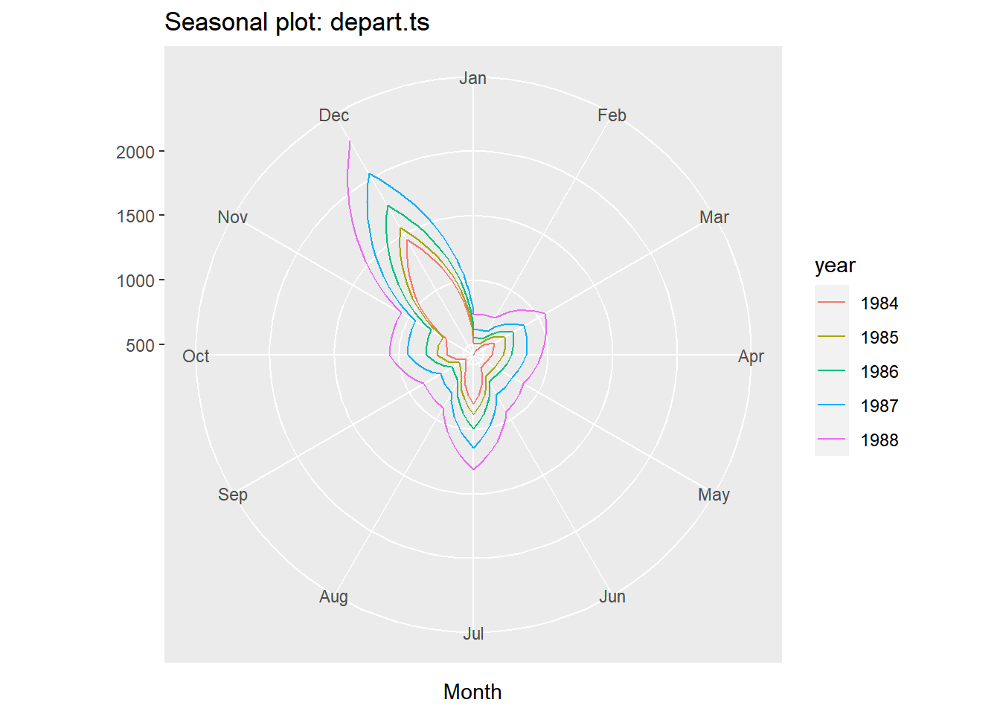
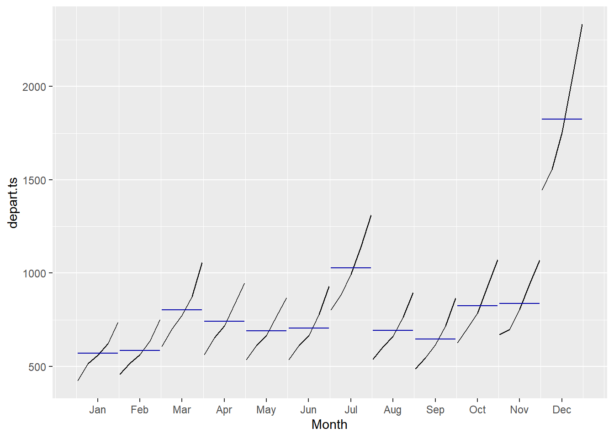
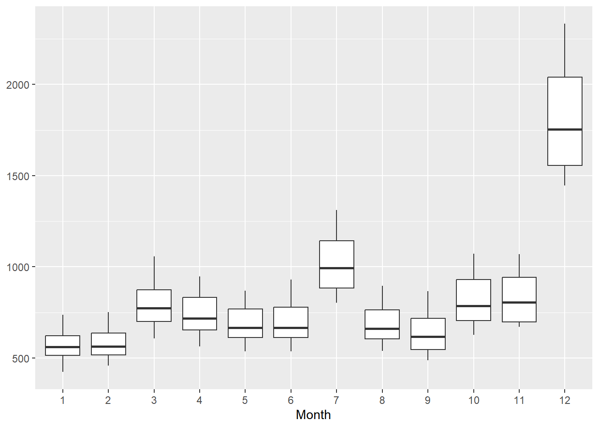
- 1981년 1월부터 1992년 12월까지 국내에 입국한 월별 관광객 수가 입력되어 있는
Ktour.txt에 대하여, 다음의 작업을 진행해 보자.
ts 객체로 변환
시계열 그래프 작성
seasonal 그래프 작성